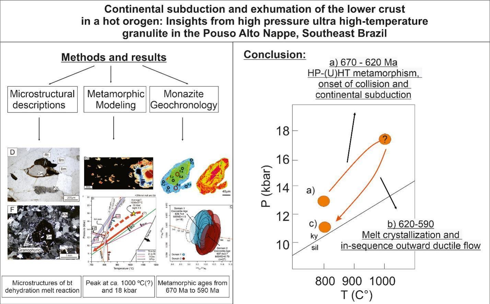

Continental subduction and exhumation of the lower crust in a hot orogen: Insights from high-pressure (ultra) high-temperatura granulite in the Pouso Alto Nappe, Southeast Brazil

Resumo em Português
A Nappe Pouso Alto (NPA) faz parte do hinterland do Orógeno Brasília Meridional (OBM) e é composta principalmente por paragnaisse portador de feldspato-K + granada + cianita + rutilo, interpretado como um granulito residual de alta pressão (AP). O granulito da NPA foi estudado por meio da combinação de descrições microestruturais e petrográficas detalhadas com petrocronologia em monazita, modelagem termodinâmica e termometria de elementos traço.A trajetória P–T–t do granulito da NPA revela que ele experienciou condições metamórficas de AP e possivelmente de temperatura ultraelevada (UHT) durante a evolução do OBM. As condições metamórficas progressivas subsolidus ocorreram entre ~670 e 620 Ma. Subsequentemente, o granulito passou por fusão parcial subsaturada em água durante o aquecimento e soterramento, atingindo condições de pico de ≥1000 °C e 18–19 kbar em idade máxima de ~620 Ma. O caminho progressivo proposto indica que o granulito foi envolvido no canal de subducção continental, atingindo profundidades de ~70 km, correspondendo à interface entre a crosta inferior e o manto litosférico em uma crosta duplamente espessada. As condições metamórficas de fácies granulito teriam sido atingidas principalmente pelo acúmulo de elementos produtores de calor e pelo fluxo de calor mantélico. A descompressão e o resfriamento das rochas enfraquecidas pelo fundido tiveram início após a delaminação do material mais denso da litosfera, com o granulito previamente enfraquecido iniciando o fluxo dúctil em sequência, impulsionado pela força gravitacional exercida pelo peso do orógeno. O granulito da NPA provavelmente registra a transição de um cinturão orogênico em forma de cunha para um platô orogênico durante o desenvolvimento da colisão continental.